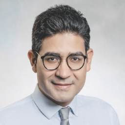

Rayan Ebnali Harari, PhD
Instructor in Emergency Medicine
Mass General Brigham
Harvard Medical School
Abstract
This talk will cover my work on using computer vision and convolutional neural networks (CNN) for analyzing MRI in knee osteoarthritis progression and OCT images for early detection of cancer-related macular edema (CME). It will also focus on the importance of explainability in AI models, ensuring they are interpretable and useful in clinical workflows. The discussion will highlight how combining multimodal data can improve image analysis and explore vision-language models (VLM) as a new approach in computer vision, with potential applications in medical imaging. The talk will share experiences from research and reflect on practical challenges and possibilities for integrating these methods in clinical settings.
Short Bio
Rayan is an Instructor at Mass General Brigham and Harvard Medical School at the Medical AI Group and STRATUS Center for Medical Simulation. With a multidisciplinary foundation in Computer Science, Cognitive Engineering, and Biomedical Engineering, His research advances AI-driven clinical decision support, generative AI, medical imaging processing, and wearable technologies for precision medicine applications. His work has resulted in over 30 peer-reviewed publications in high-impact journals such as JAMA Network Open (IF 13.5), Journal of Urology (IF 7.4), Artificial Intelligence in Medicine (IF 6.1), Accident Analysis & Prevention (IF 5.7), BMC Medical Informatics and Decision Making (IF 3.6), Transportation Research Part F (IF 3.5), Physica A: Statistical Mechanics and its Applications (IF 3.2), Computers & Mathematics with Applications (IF 2.9), and Applied Ergonomics (IF 3.1). Additionally, he has delivered over 50 presentations at leading conferences, including CHI, MICCAI, HFES, STS, and IEEE events.
Content carried over from https://ncigt.org/rayan-ebnali-harari-phd-applications-of-cnns-in-mri-and-oct-imaging-case-studies-and-emerging-topics-in-medical-image-analysis/.